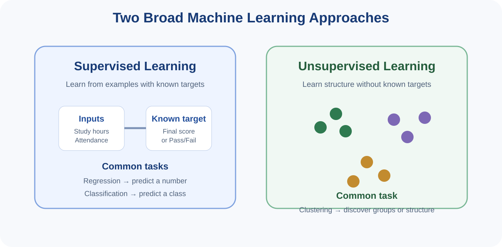
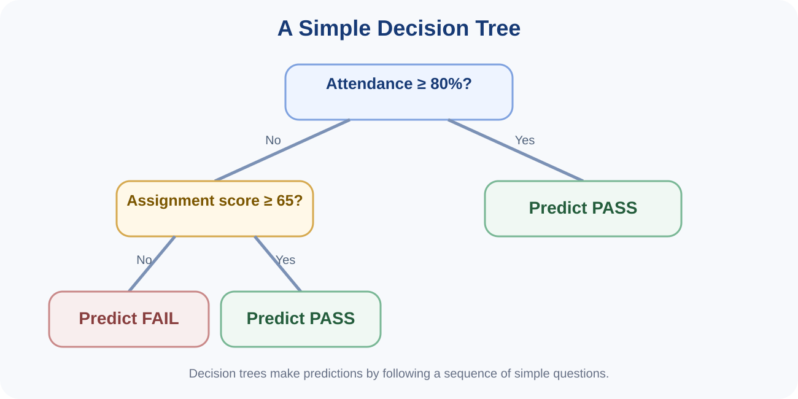
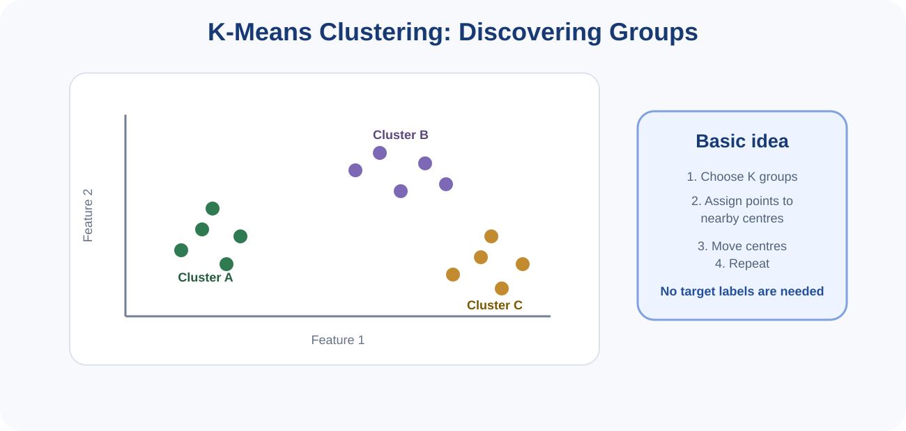
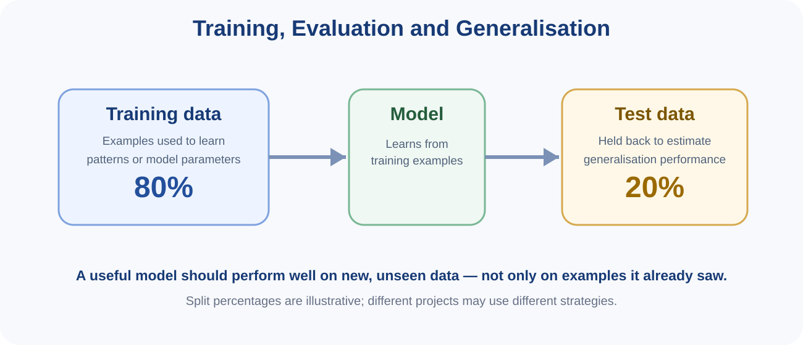

You can read these notes on screen or use the button below to print or save them as PDF.
Machine Learning (ML) is an approach within Artificial Intelligence in which computer systems learn patterns from data and use those patterns to make predictions, classifications or groupings. Instead of writing every decision rule manually, the developer provides examples, variables and an algorithm that can learn useful relationships.
Machine Learning is already familiar from earlier topics. Topic 1 introduced it as part of AI, Topic 2 prepared the data, Topic 3 explored patterns, and Topic 4 introduced regression and statistical relationships. Topic 5 brings these ideas together in the context of building and evaluating simple predictive or grouping models.

In supervised learning, the training data include both input variables and a known target. The goal is to learn a relationship that can be applied to new examples.
Two common supervised tasks are:
In unsupervised learning, the data do not contain a known target label. The algorithm looks for structure or grouping within the input data. Clustering is a common unsupervised task.
Topic 4 introduced regression as a statistical method. In Machine Learning, linear regression can also be viewed as a supervised learning algorithm: the model learns a line that relates input variables to a numerical target.
For example, the input may be study hours and the target may be final score. During training, the model estimates the line that best fits the training examples. The fitted model can then estimate scores for new students.
A decision tree makes a prediction by asking a sequence of simple questions about the input variables. Each question splits the data into smaller groups until a prediction is made.

Decision trees are attractive because their logic can often be explained in plain language. A tree may ask, for example:
K-means is an unsupervised clustering algorithm that groups observations based on similarity. The analyst chooses the number of clusters, K, and the algorithm repeatedly assigns observations to nearby cluster centres and updates those centres.

The clusters produced by K-means are mathematical groupings. They do not automatically have meaningful real-world names. The analyst must interpret them carefully.
A Machine Learning model should not be judged only on the data used to train it. A model can appear excellent simply because it has memorised training examples. What matters is whether it generalises to new, unseen data.

A simple workflow divides data into separate subsets. Training data are used to learn the model. A validation set may be used to compare settings or models during development. A test set is held back for final evaluation.
In small introductory examples, students often see a train/test split such as 80/20. This percentage is only an illustration. The appropriate strategy depends on dataset size, problem type and later evaluation design.
| Task | Simple evaluation idea | Example |
|---|---|---|
| Classification | How many predictions are correct? | Accuracy |
| Regression | How far are predictions from true numerical values? | Mean Absolute Error (MAE) |
| Clustering | Are observations within a cluster more similar than observations in different clusters? | Visual or quantitative cluster assessment |
Accuracy alone may be misleading when classes are highly imbalanced. More detailed classification metrics such as precision, recall and F1-score are studied in later Machine Learning work.
Validation protects against overly optimistic conclusions. A model that performs well on unseen data is more convincing than one evaluated only on the examples from which it learned.